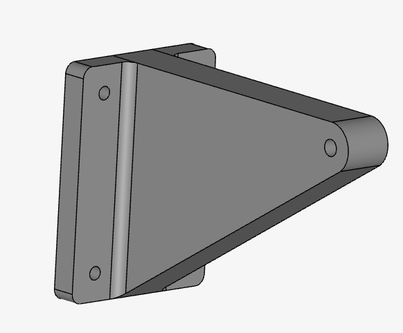
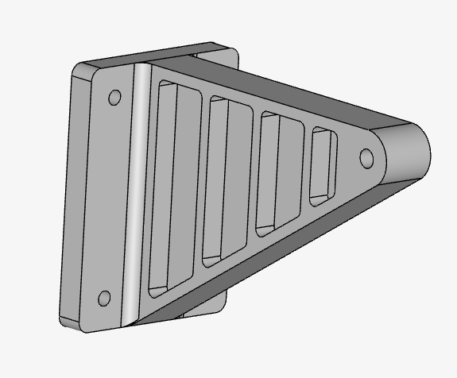
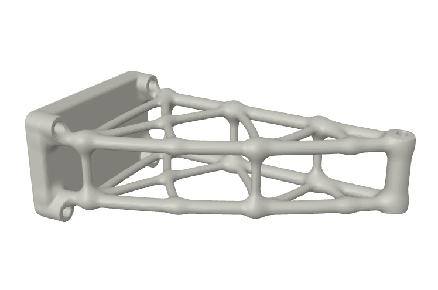

Aerospace Structural Bracket — Parametric CAD & Design Iteration
This academic engineering project focuses on the mechanical design and iterative weight optimization of a structural aerospace mounting bracket. Rather than jumping straight to a complex shape, the objective was to follow a structured engineering workflow: establishing functional mounting interfaces, automating geometry generation through scripting, and exploring three distinct structural concepts before running comparative Finite Element Analysis (FEA).
1. Design Specifications & Constraints
- Functional Interfaces: Fixed mounting hole diameters, base footprint, and load-application point imposed by the assembly environment.
- Mechanical Integrity: Withstand static operational loads without plastic deformation (maintaining an aerospace safety margin below yield strength).
- Mass Optimization: Remove non-contributing material in low-stress zones to minimize part weight while preserving overall stiffness.
- Manufacturability: Maintain clean transitions, accessible bolt clearances, and realistic wall thicknesses.
2. Engineering Methodology & Workflow
- Parametric Architecture: Built the geometry around key driving dimensions (rib thickness, pocket radii, flange width) to allow rapid design updates.
- IronPython Automation: Used SpaceClaim's IronPython API to script repetitive geometric operations and ensure consistency across variants.
- Multi-Variant Comparison: Developed three progressive geometries to evaluate the trade-off between structural rigidity and material removal.
- CAD-to-FEA Pipeline: Transitioned models to Onshape to refine fillet transitions and export clean B-Rep (STEP) solids for meshing in SimScale.
3. Why Three Design Variants?
Developing three separate models allows a step-by-step evaluation of how geometry changes affect stiffness, stress concentrations, and total mass:

Variant A — Baseline Concept
Initial functional geometry validating interface dimensions, bolt clearances, and primary load paths. Serves as the reference benchmark for mass and stiffness.

Variant B — Pocketed & Ribbed
First weight-reduction iteration introducing material cutouts in low-load areas while keeping structural ribs aligned with the main force vectors.

Variant C — Lightweight Optimization
Further mass-reduced architecture pushing material efficiency around the mounting bosses, requiring careful filleting to control local stress concentrations.